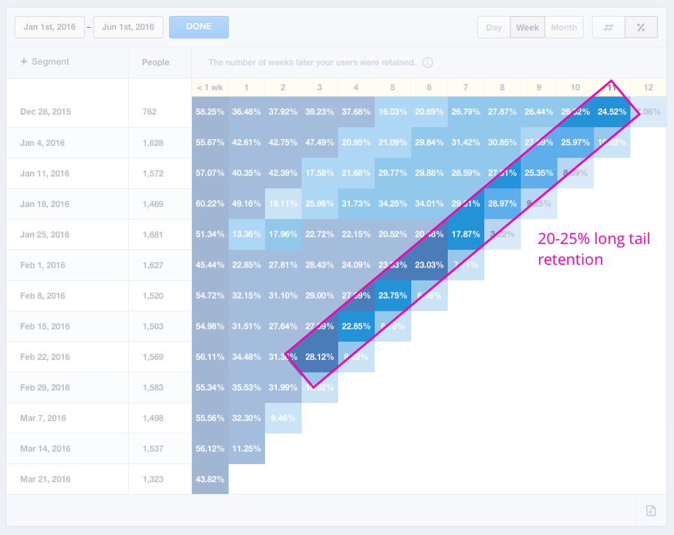

Pivotal Tracker Analytics is an Agile project management metrics tool built for Pivotal Tracker. I lead the design of Analytics over the course of many months: starting with user research, progressing with lo-fi designs, and pairing with developers to craft the finished product.
It is one of the most popular new features on Pivotal Tracker to date despite being a "niche" feature designed for project managers. It enjoys an average long-tail 25% retention rate and thousands of daily users.
Pivotal Tracker had been receiving feedback for some time that our reporting and analytics were lacking. We knew we needed improved analytical tools, but weren't sure how exactly to go about it.
We began by analyzing the requests for customer type. To no surprise, those requesting reporting and analytics tended to be those in a project management or leadership role, and generally from bigger companies and consultancies.

To narrow down on what we wanted to build, we spoke to 20 or so PMs. These were PMs both within Pivotal Labs and customers of Tracker.
First, we wanted to know more about what these customers were already doing for their reporting needs. We used a mixture of unstructured interviews and artifact research to learn more. What we learned, particularly from the artifact collection, was that PMs were generally creating reports which contained information on:
We didn't want to stop at just asking people what they were doing already. It was a great starting point, but didn't address where people desired to go with their project analytics.
We interviewed a number of PMs that we knew had a history of successful agile projects. This included PMs both within and outside of Pivotal, but we focused mostly on Pivotal PMs because we could verify their project history.
From a series of the same interviews as above, plus follow-ups, we were able to create a series of "problem statements" from affinity diagramming. We then created another affinity diagram using these problem statements.
Through all of this distillation, we found a number of common themes that experienced PMs look for in successful projects:
We produced a number of goals from the research. We wanted to support the kinds of reporting that customers were already doing, but we also wanted to be future-looking and provide indicators of any upcoming problems.
To complicate things, we also had to support the charts that we were already using. Many of these were mainstays of Agile project management (like burndown charts) and others were recent creations which became very popular (like cumulative flow diagrams).

We decided to take an "onion approach" using a dashboard as the outter layer, providing more detail as the user progressed. The idea is to provide brief, relevant information up front in a shapshot, and allow users to dig into the details.
Any section of a graph could be hovered on to see a dropdown with exact details. Clicking would reveal a larger version of the graph with specific story information.
All pages share a unified format, with controls (such as time frame, CSV, print options) at the top, and details the further down the page. On any detail page, a section of the chart could be clicked and story details revealed down below.

Project health trends cover a number of concerns (namely around predictability) and also provide indicators of any potential problems.
For example, if work suddenly slows down, and cycle time or rejection rate suddenly go up, this could be a signal that something is wrong in the acceptance criteria of stories. It can also showcase inequalities in story work overall, in particular working completely on features in one iteration, and bugs the next.

After showing project health, another concern of project managers and teams is feature progress. We demonstrate this in two ways:
Just as important as showing a snapshot of all progres, we also want people to be able to dig into the details and seeing which stories were completed, blocked, or affecting progress.
In the example of cycle time, if the PM observes a sudden increase in time spent on stories, they can click and zoom in on the chart. This reveals specific story details, including how much time was spent in particular phases of stories. This can help narrow down exactly where the roadblock was in a process.


Analytics remains one of the most popular and frequently used Tracker features to date. It enjoys a 20-25% long-tail retention week-over-week (which means about 25% of people who use it once use it again and again).
Tracker receives frequent praise from customers on the feature in addition to various feature requests. A number of larger customers have credited Analytics with keeping them on the platform vs. moving to a competitor.
